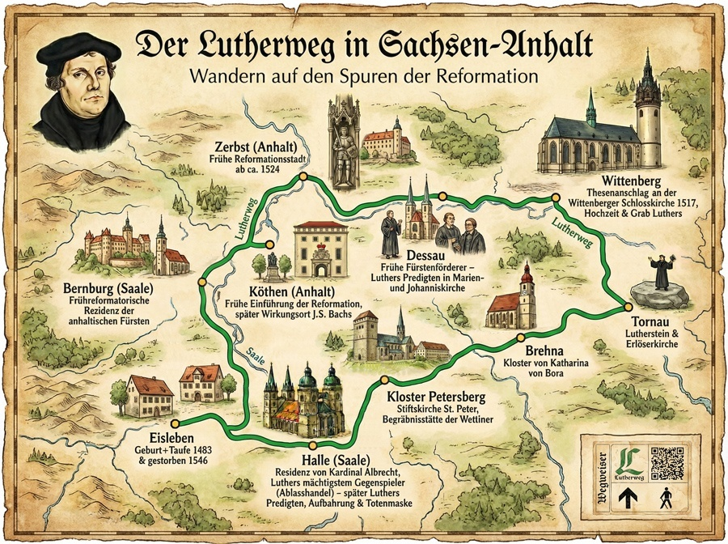

Auf den Spuren Martin Luthers
1. Der Lutherweg in Sachsen-Anhalt
Sachsen-Anhalt gilt als das Ursprungsland der Reformation. Der Lutherweg ist ein spiritueller Wanderweg, der wichtige Stationen im Leben und Wirken des Reformators Martin Luther miteinander verbindet.
Die Route: Auf einer Länge von über 410 Kilometern führt das Wegenetz durch reizvolle Landschaften und historische Städte. Gekennzeichnet ist der Weg durch ein grünes „L“ auf weißem Grund.
Zu den wichtigsten Stationen gehören die Lutherstadt Wittenberg (Thesenanschlag), die Lutherstadt Eisleben (Geburts- und Sterbeort) sowie Mansfeld und Halle (Saale). Der Weg lädt Pilger und Wanderer dazu ein, unter dem Motto „Gehen – Schauen – Beten – zur Ruhe kommen“ Geschichte hautnah zu erleben.
2. Historische Bedeutung Martin Luthers
Martin Luther (1483–1546) ist eine der zentralen Schlüsselfiguren der europäischen Geschichte. Sein Wirken löste weit mehr als nur eine kirchliche Erneuerung aus:
- Die Reformation: Mit seinem Thesenanschlag 1517 kritisierte er den Ablasshandel der Kirche. Dies führte zur Spaltung der Westkirche in Katholizismus und Protestantismus und veränderte die politische Landkarte Europas dauerhaft.
- Die Deutsche Sprache: Luthers Übersetzung der Bibel aus dem Urtext ins Deutsche auf der Wartburg schuf die Grundlage für unsere heutige hochdeutsche Schriftsprache. Er „schaute dem Volk aufs Maul“ und machte Bildung für breite Schichten zugänglich.
- Gesellschaftlicher Wandel: Seine Lehren stärkten die Rolle des Individuums und förderten das Schulwesen sowie die Sozialfürsorge in den Städten.
3. Luthers Bedeutung für die heutige Zeit
Auch über 500 Jahre später sind Luthers Impulse in unserer modernen Gesellschaft spürbar:
- Gewissensfreiheit & Zivilcourage: Sein berühmter Ausspruch auf dem Reichstag zu Worms – sinngemäß: „Hier stehe ich, ich kann nicht anders“ – gilt bis heute als Vorbild für standhaftes Eintreten für die eigene Überzeugung, auch gegen Widerstände.
- Mündigkeit: Luther forderte, dass jeder Mensch selbstständig denken und lesen sollte. Dieser Gedanke der Eigenverantwortung ist ein Grundpfeiler moderner Demokratien.
- Mediennutzung: Luther war der erste „Medienstar“ der Geschichte, der den Buchdruck nutzte, um seine Ideen massenhaft zu verbreiten. Dies erinnert an die heutige Informationsgesellschaft.
Trotz seiner historischen Verdienste wird Luther heute auch kritisch betrachtet (insbesondere seine späten antijudaistischen Schriften), was zu einer differenzierten Auseinandersetzung mit der Geschichte anregt.
4. Infotafel "Der Lutherweg in Sachsen-Anhalt"
Die folgende Karte zeigt schematisch die wichtigsten Wirkungsstätten Martin Luthers.

Karte herunterladen
{kind=link}